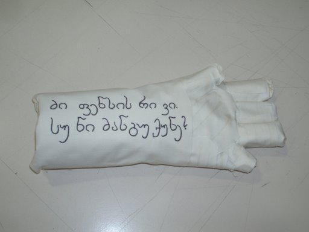
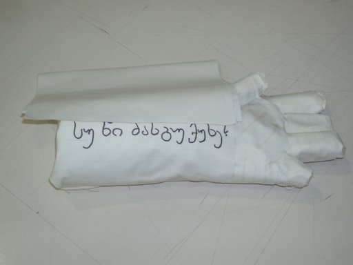

For the IDSS2008 presentation we create the BabelBacteria, the BabelWall and BabelArm. The BabelTower is not interesting for our current project as we want to focus on the interaction with the students. The BabelLanguage also isn't that interesting as there already is a suitable language for our purpose.
We use finger paint as the BabelBacteria. You dip your finger in a cup of finger paint, write on your BabelArm and when you're finished you can wash your fingers in a cup with water.
The BabelWall is made out of large pieces of cardboard. On these cardboards we write with marker pen a message in Esperanto:
Etime la vorto kaligrafio estas kunmetajo el du grekaj vortoj: kalos esta bela kaj grafos esta skribo.
But then using the Georgian alphabet. This message from the Turkish university is send to the Swedish university during the presentation.
The BabelArm is created using aluminum net covered with newspaper paper, foil plastic and cotton. You can write on this arm with the BabelBacteria (finger paint).
For the experience during the presentation we're using only the foil plastic to write on and read from.
We decided to focus on the bacteriaprocess which lead me to the idea of making a prototype. As the bacterias are going to be shown on the arm, the first thing I had in mind was making an arm-prototype. I used an ironfence to create the shape and secondly I covered it with newspaper and plastic foil to make it more compact. The last layer was made of cotton. On the inside of the arm a calligraphic message was written with fingerpaint which we decided to use. We bought different kinds of colors. As this calligraphic text is suppose to show up as a personal message a removal bit of cotton was used to make the message appear.
We also tried another way for creating a message which was the act of writing with spices. I tought that it visiually refers to bacteria and its spreading on the arm. It wasn't that good though because it was difficult to write with it and nobody could see the message so we skipt it.


This page is last edited by Andreas and Lode at 14.45
Interaction Design Summer School 2008 at the Kadir Has University in Istanbul, Turkey
Group A: Andreas Bernstein, Armagon Kösecioglu, Birgit Flesch, Lode Claassen